Identita domu
Upozornění – částečně hypotéza: Jen část domu je doložena fotografií; zbytek je odvozen z plánu nebo ze sousedního domu.
Severní polovina dvojdomu 1813/1824; fotografie jen z demolice, průčelí podle plánu a zrcadlově podle 1824.
Použité prameny: plán Bartáka, fotografie z demolice, skica (20).
Kde je dům na pramenech
Dům je v červeném rámečku, každý počítaný otvor nese ID z plánu modelu; sousedé jsou popsáni čísly. U domů jen z projektu je rámeček na výkresu pohledu.

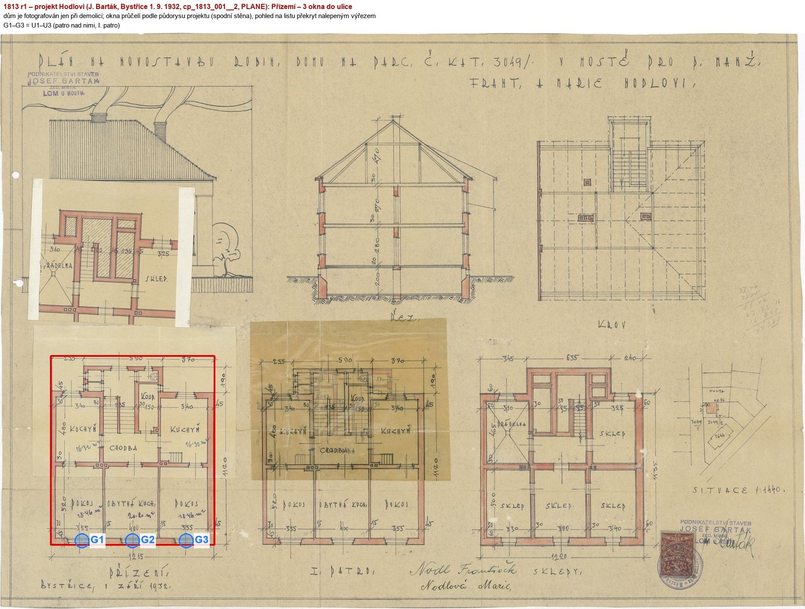
Přílohy v databázi (12)
Všechny přílohy struktury 1813 v databázi Libuše, načtené 23. 10. 2026 (jen čtení) a otevřené. Kliknutím otevřete větší náhled.

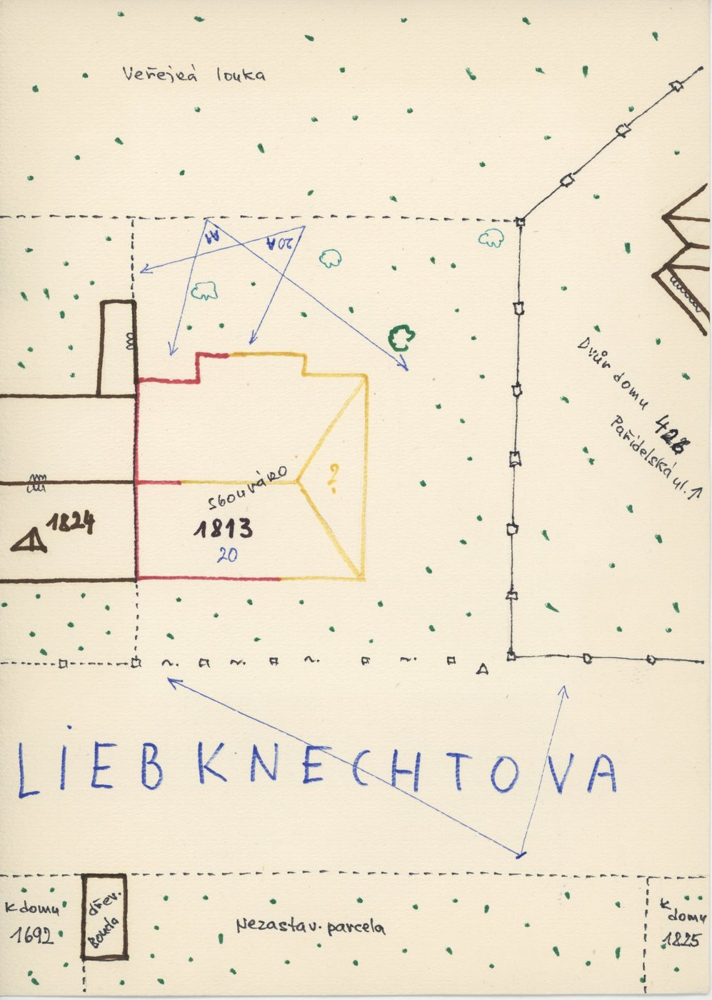
plán / výkres
SHA-256 67699ae3efc7…

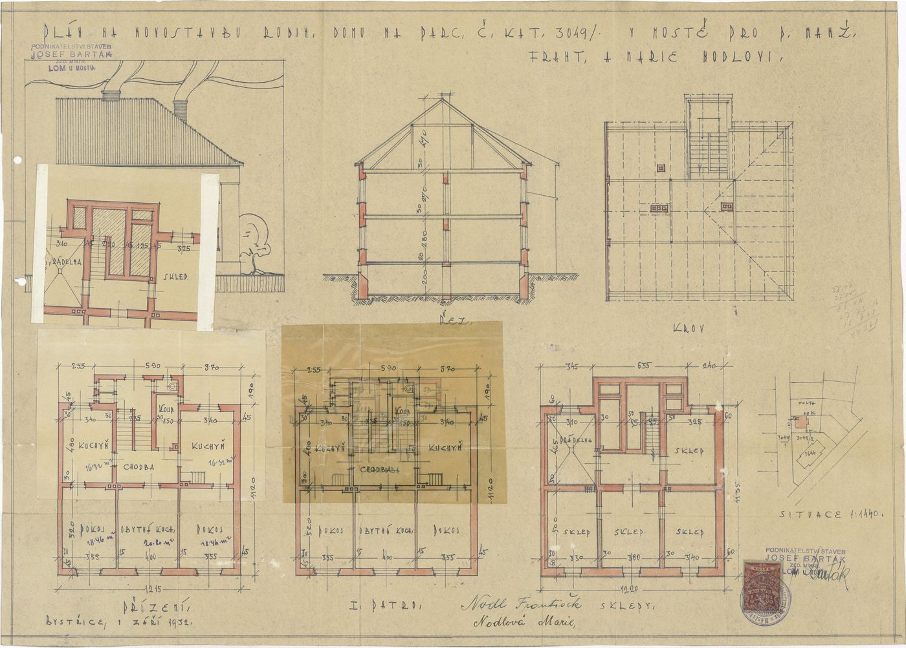
plán / výkres
SHA-256 bf239eca2366…

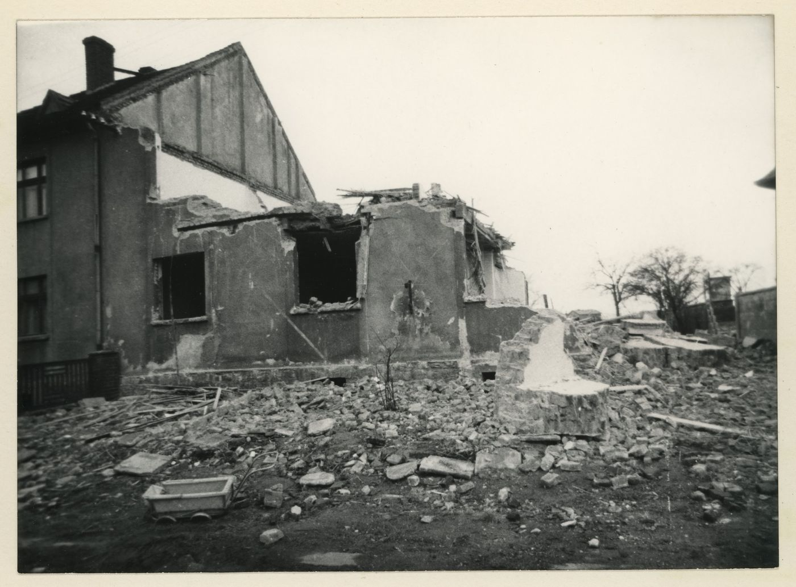
fotografie
SHA-256 a711637b5f92…

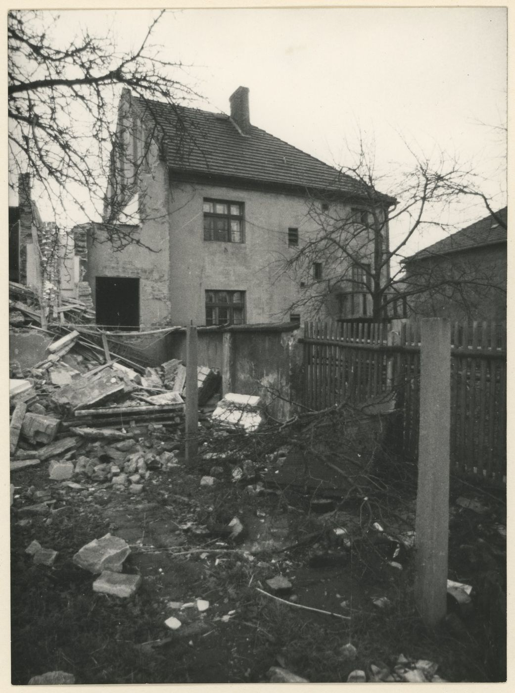
fotografie
SHA-256 8e001d860ac3…

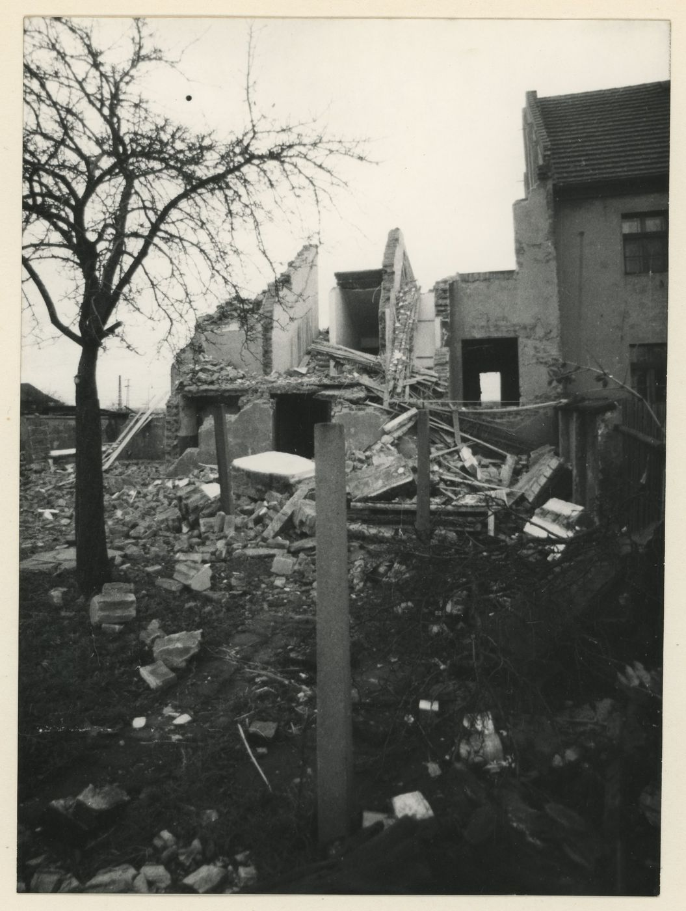
fotografie
SHA-256 0ec6f6d88d18…

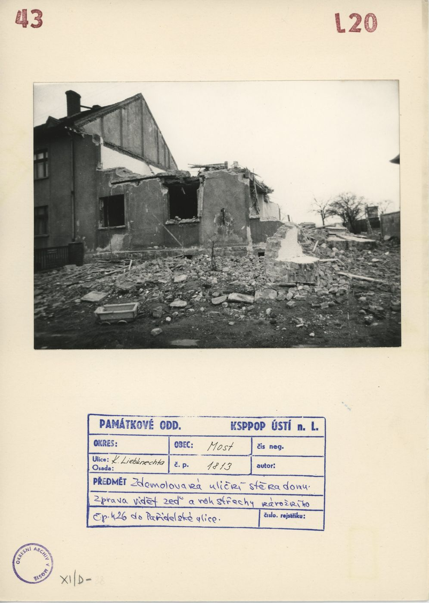
archivní karta
SHA-256 4245469a2225…

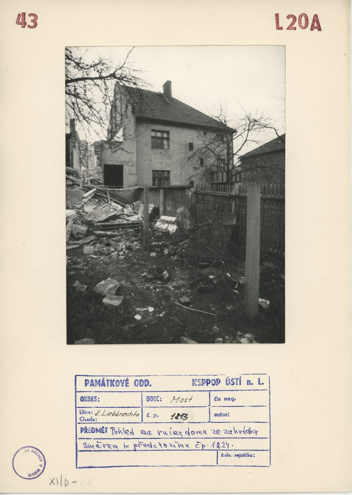
archivní karta
SHA-256 69ef8a46545e…

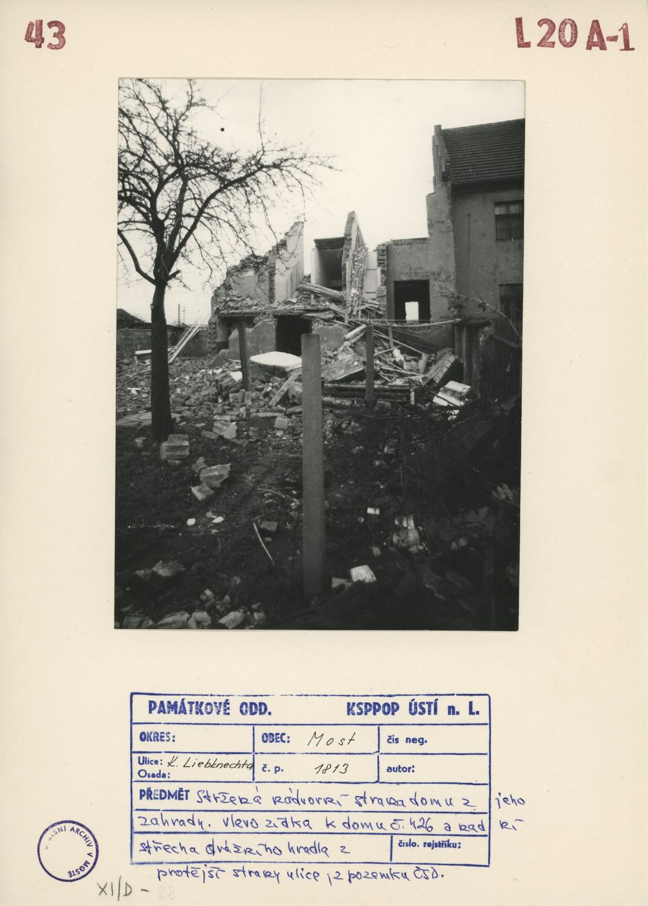
archivní karta
SHA-256 51cc40897b4a…

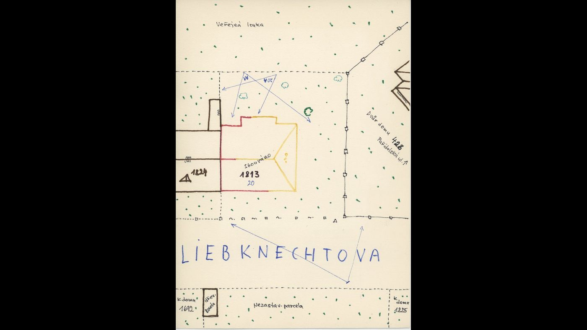
odvozenina (kolorovaná / FRONT)
SHA-256 6c7dc3f01609…

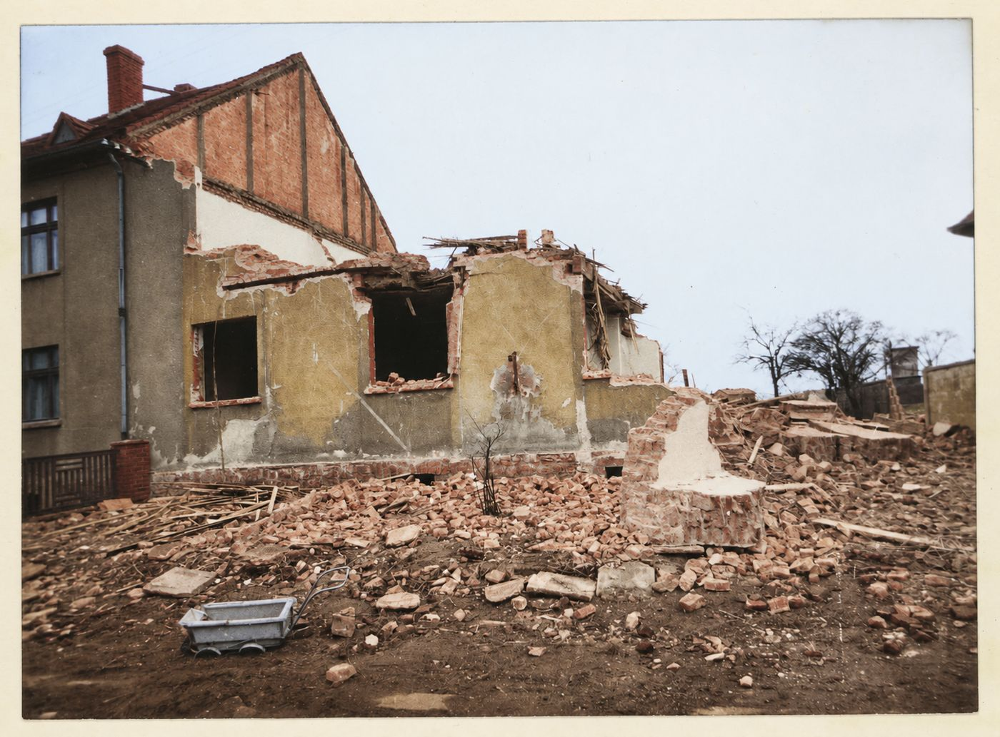
odvozenina (kolorovaná / FRONT)
SHA-256 77c37cd0d0c4…

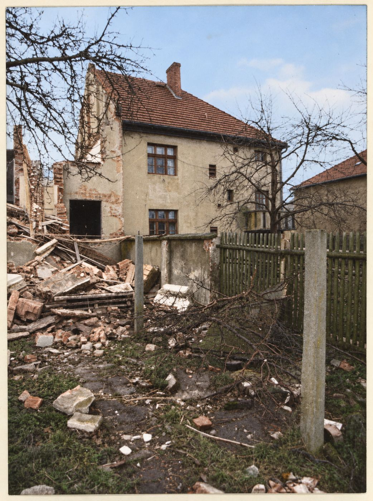
odvozenina (kolorovaná / FRONT)
SHA-256 2d232985df86…

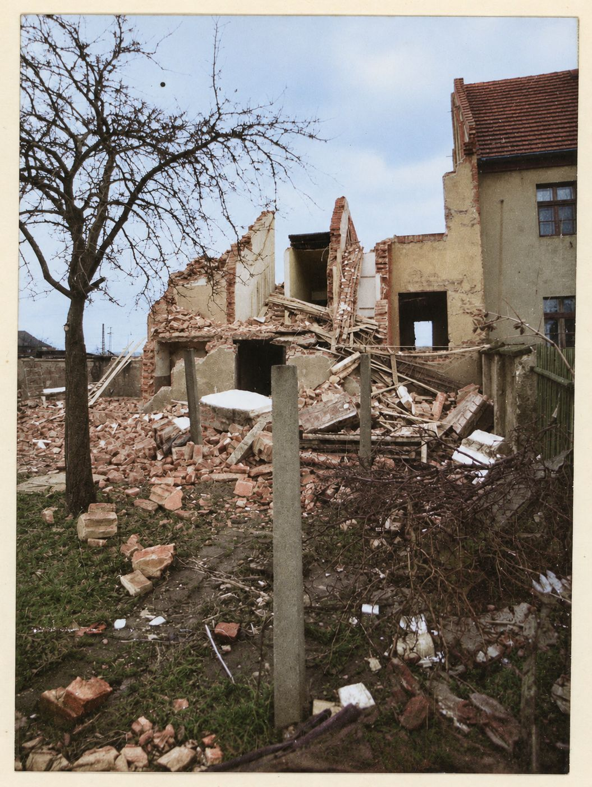
odvozenina (kolorovaná / FRONT)
SHA-256 7491a62fa6fd…
Geometrie
Upozornění – částečně hypotéza: Jen část domu je doložena fotografií; zbytek je odvozen z plánu nebo ze sousedního domu.
| Revize geometrie | r1 |
|---|---|
| Poloha | GIS půdorys id 1569 (ulice Rudolfova) |
| Šířka průčelí | 12,50 m |
| Výška okapu | 6,70 m |
| Podlaží | 2 |
| Střecha podle pramenů | podle plánu |
| Otvory / vikýře | 6 / 0 |
| Polygonů | 171 |
| Kontrola podkroví a střechy (brána) | prošla: vlasové zásahy 3, nekryté zdivo 0,00 m², střecha nad prázdnem 0,00 m²; fasáda: passed |
Otvory po fasádách (facade_evidence)
| Fasáda | Okna po podlažích | Dveře | Počítané | Hypotéza | Pramen | Poznámka |
|---|---|---|---|---|---|---|
| main | [3, 3] | 0 | 6 | 0 | plan | z projektu; dům fotografován jen jako ruina |
Kontrolní pohledy


Textury
bez textur (hypotéza – jen prosté materiály)
Až Codex dodá texturovaný model, objeví se v prohlížeči nahoře volba Textury (Codex).
Hypotézy
Upozornění – částečně hypotéza: Jen část domu je doložena fotografií; zbytek je odvozen z plánu nebo ze sousedního domu.
Vše níže je model_hypothesis, provisional, locked: false.
- ulicni fasada jen podle projektu 1932 - realizace nedolozena (dum fotografovan az pri demolici)
- vysky podle rezu projektu
Soubory
- Geometrie čp. 1813, GLB
- Pracovní model: F:\MOST\output\rudolfova_street_claude_2026-10-23\houses\cp1813\r1\cp_1813_G_r1.blend
- Plán modelu: F:\MOST\output\rudolfova_street_claude_2026-10-23\houses\cp1813\geometry_plan.json